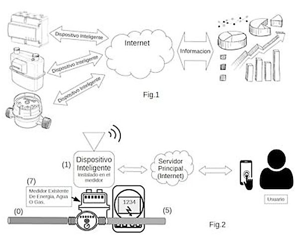

NC2019/0013907
PATENTEPATENTE – MEDIDOR INTELIGENTE
DISPOSITIVO PARA TOMA DE DATOS EN MEDIDORES DE SERVICIOS PÚBLICOS Y/O MEDIDORES INTELIGENTES QUE BRINDAN UNA RED DE COMUNICACIONES
- Inventor
- Jorge Hernán Salazar – Integrasoft S.A.S
- Sector
- Electricidad – Electrónica
- Página Web
- Abrir enlace ↗
- Contacto
- 📞 3105935583📞 3172132897